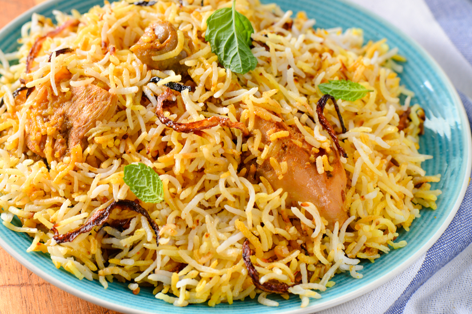

Biriyani
Ingredients
- Basmati Rice
- Meat (Chicken, Mutton, or Beef)
- Yogurt (for marination)
- Biryani Masala (spices mix)
- Onion (fried)
Recipe
- Marinate the Meat — Mix meat with yogurt, spices, and let it rest.
- Cook Rice — Boil basmati rice until 70% done.
- Fry Onions — Make crispy golden-brown fried onions.
- Layer and Assemble — Layer rice and meat alternately, add fried onions.
- Dum Cooking — Cover tightly and slow-cook until fully done.

Fuchka
Ingredients
- Semolina or Flour (for making puri)
- Boiled Potatoes (for stuffing)
- Tamarind Water (for spicy pani)
- Black Salt and Spices
- Chickpeas (optional, for filling)
Recipe
- Prepare the Puri — Make dough from semolina, roll, and fry tiny puris.
- Make the Filling — Mix mashed potatoes, chickpeas, spices.
- Prepare the Pani — Make spicy tangy tamarind water.
- Crack Open the Puri — Make a hole on top of each puri.
- Assemble and Serve — Stuff puri with filling and dip into pani!